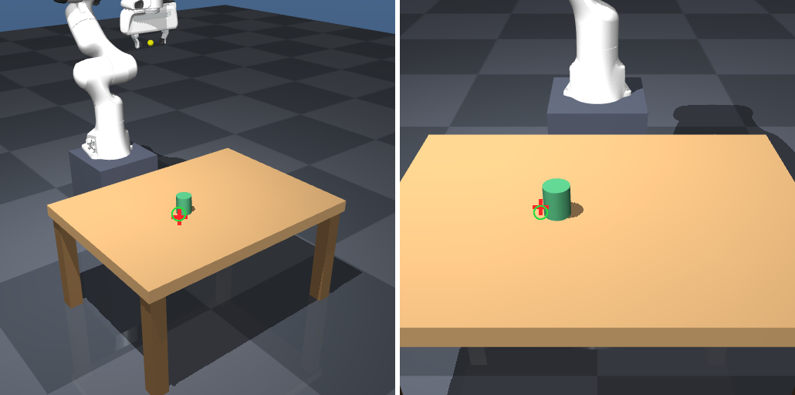

2026-09-24 · 五场景统一报告与相机打点
Cover / Blocks / Pour / Handover / Storage
完整纳入Cover，合并展示17次原执行与113次状态转移，五个场景均有相机与打点图库，共20组原图/叠加图。Cover、Blocks的10组来自真实闭环调用；三个双臂的10组为新补充关键帧Qwen诊断，未用于原控制，原执行仍Oracle+weld。图片可切换、放大并查看原始提示和回复。
打开五场景统一报告、20组相机打点图与完整视频Cover、Blocks、Pour、Handover、Storage 的当前直接执行版本与最新可用生成程序/正式BT证据已归并。源工程未删除，历史失败与旧版本未混进任务目录。
完整纳入Cover，合并展示17次原执行与113次状态转移，五个场景均有相机与打点图库，共20组原图/叠加图。Cover、Blocks的10组来自真实闭环调用；三个双臂的10组为新补充关键帧Qwen诊断，未用于原控制，原执行仍Oracle+weld。图片可切换、放大并查看原始提示和回复。
打开五场景统一报告、20组相机打点图与完整视频7/7动作验收，三个Cover视觉任务3/3通过，另两个±2mm初态2/2通过。视觉使用俯视Qwen语义点、RGB轮廓细化与对应特征高度平面；保留显式几何先验、仿真控制反馈与全部失败。土豆两动作复用已生成的同类程序并重验，不计作新生成。
查看最终修复报告、真实模型输出和视频新试验独立于旧整动作包装重放：会话提出候选+Oracle定位基线通过，本地模型自动提出/代码采样及Qwen视觉闭环仍有失败。五场景旧结果不能作为新论文方法已全部复现的证据。
查看本次方法报告、正式BT、视频与真实失败
| 后端 | 端到端成功 | 像素误差 |
|---|---|---|
| Oracle | 2/2（随包原始明细） | 对照真值投影 |
| Qwen2.5-VL-3B-Instruct-4bit | 12/20 | median 18.0 px |
| Qwen3.5-0.8B-4bit（本次补跑） | 2/20 | median 158.5 px |